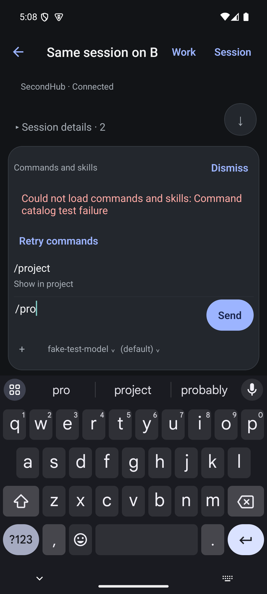

← Lookbook / Presentation study 02
Give different things
different weight.
Proposed composition using the actual isolated-session markers and interruption notice from the native screenshots. No invented assistant response. This studies presentation; it does not establish native behavior or feature parity.
Session details · 2
Existing detail contents remain available. This study does not fabricate their values.
Notice · turn interrupted
<SYSTEM-REMINDER> The user interrupted the previous turn before it completed. Any partial tool output above is incomplete. Wait for the user's next message before continuing. </SYSTEM-REMINDER>
Notice · turn interrupted
<SYSTEM-REMINDER> The user interrupted the previous turn before it completed. Any partial tool output above is incomplete. Wait for the user's next message before continuing. </SYSTEM-REMINDER>
Catalog unavailable · details
Could not load commands and skills: Command catalog test failure
Expand notices and catalog details. Selecting /project edits this study's draft only. Retry simulates recovery locally. Keyboard is an illustration.
One place for orientation
Session title first, hub and project directly beneath. A healthy connection does not need its own permanent row. Disconnection must become explicit in that same location. Consolidating Work and Session requires preserving every existing destination in the action surface.
The conversation is the page
Messages have reading rhythm. Routine machine notices use restrained disclosures with their exact contents preserved. Persisted failures and unanswered questions must never disappear into these groups. Notice classification must use verified event metadata, not guesses from length or wording.
The composer is one instrument
Draft, primary action, attachment, model and reasoning form one compact unit. Suggestions are temporary. A catalog error affects suggestions, so its explanation belongs there; it must not visually imply that the session itself is disconnected.
Different surfaces for different work
- Sessions: title-led rows; project and relative time support recognition. Full paths belong in details.
- Tools: a quiet chronological activity trail, expanding into selectable output. Code keeps its own type and horizontal space.
- Questions and approvals: one focused decision with consequence and destination; never generic notification cards.
- Settings and hub administration: grouped native forms, with errors beside the operation that failed.
Current native reference

The baseline proves the problem, not the proposed solution. Accent color is exploratory. Touch targets, long labels, large text, running controls and native navigation need device validation.